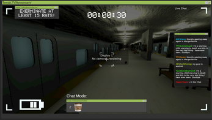
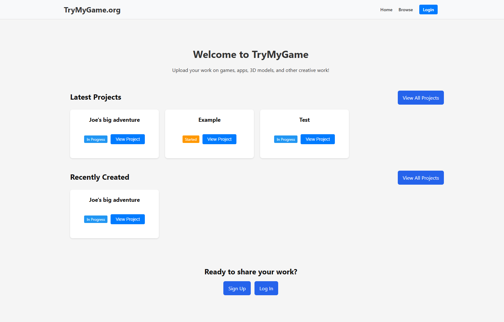

Tweak.TV
First-person action game

A first-person action game about completing tasks quickly in abandoned places, with a streamer aesthetic. I worked on the enemies and items.
Software and game developer
I’m a student at Pennsylvania College of Technology pursuing my bachelor’s degree in both Software & Information Systems Management and Game & Simulation Programming.
First-person action game

A first-person action game about completing tasks quickly in abandoned places, with a streamer aesthetic. I worked on the enemies and items.
Project development website (senior project)

A website where developers can show off projects such as games, art, and apps. The main feature is a 3D model viewer that uses Babylon Lite to display GLB models and their animations.